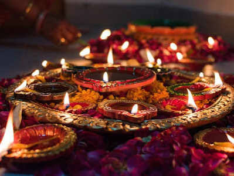
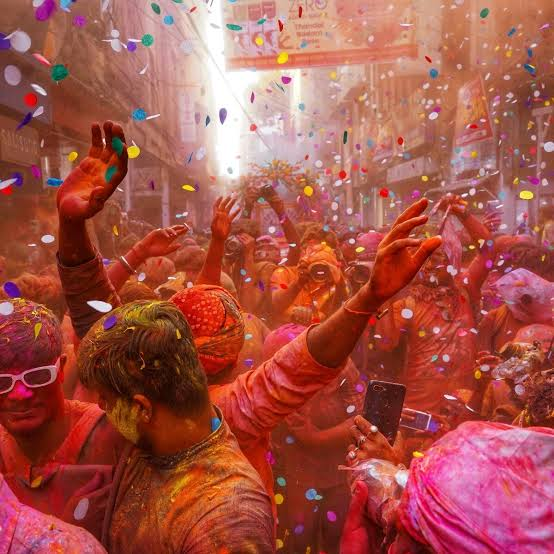

Onam is the grand annual harvest and cultural festival of Kerala, celebrated by Malayali communities across the globe The ten-day festival takes place during the Malayalam month of Chingam, which falls in August or September. It marks the Malayalam New Year and celebrates a successful agricultural harvest.

Diwali is the major Hindu festival of lights, symbolizing the victory of light over darkness and good over evil. The five-day festival runs from November 6 to November 10, 2026

Holika Dahan (Chhoti Holi): Bonfires are lit on the eve of the festival to symbolize the burning of evil and ego.Rangwali Holi (Dhulandi): The main day of celebration where people smear colored powders (gulal), throw colored water, and enjoy festive foods like gujiya and thandai.